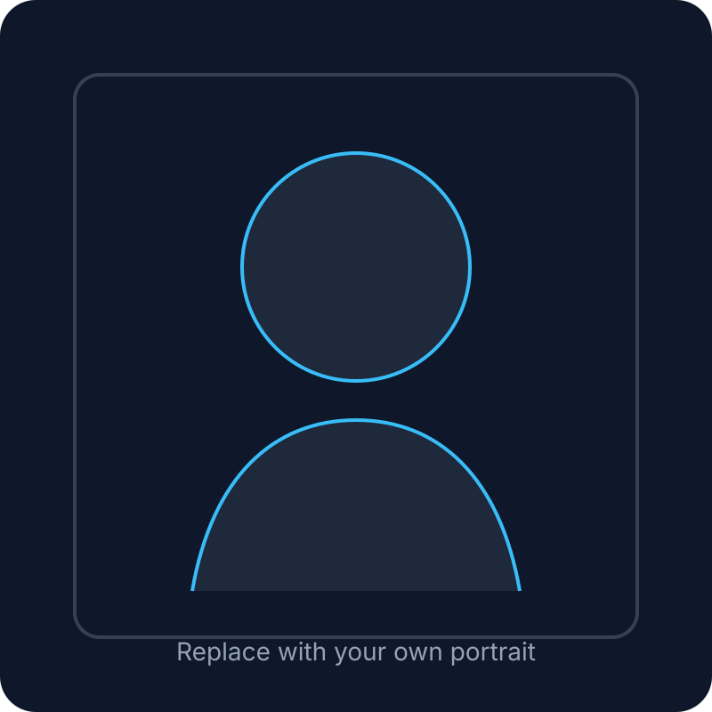

Technical Depth
Comfortable moving from concepts to implementation, especially in security, data analysis, and circuit-level design workflows.
Nick · Zuoming Niu
I am an undergraduate student at Xi’an Jiaotong University, with interests across AI systems, security, integrated circuit design, and technical problem solving. I enjoy projects that combine deep analytical work with clear communication and visual storytelling.

Current Focus
Cross-disciplinary work spanning computer systems, privacy/security, and chip design.
About
I am pursuing a B.S. in Computer Science and Technology (Special Class for Integrated Circuits) at Xi’an Jiaotong University. My academic training sits at the intersection of computing and hardware, while my project experience ranges from federated learning privacy research to full-custom CMOS design.
What distinguishes me is not only technical breadth, but also the ability to organize work, lead teams, and explain complex ideas with structure. Alongside engineering projects, I have directed large student media productions and managed communication at scale, which shaped a working style that is both disciplined and expressive.
Strengths
Comfortable moving from concepts to implementation, especially in security, data analysis, and circuit-level design workflows.
Experience coordinating teams, managing deadlines, and turning complex tasks into executable plans.
Strong interest in presenting technical work clearly, visually, and persuasively rather than merely documenting it.
Selected Work
Reproduced DLG-style privacy attacks on federated learning, evaluated reconstruction quality, analyzed the optimization bottlenecks of gradient inversion, and compared defense paths including homomorphic encryption, secure multi-party computation, and differential privacy.
Participated in the complete circuit-to-layout flow of an 8-bit addressable latch, including schematic design, pre-layout simulation, layout implementation, post-layout extraction, and timing/power verification in Cadence Virtuoso and Spectre.
Leadership & Style
Beyond coursework and lab work, I served as Station Director of the Xi’an Jiaotong University Student TV Station, leading an 80+ member team and participating in large-scale campus event production. This experience strengthened my ability to manage people, shape narratives, and think about audience-facing presentation.
That is also the style of this homepage: professional first, but not flat; structured, but not lifeless.
Awards & Credentials
Contact
Name: Zuoming Niu (Nick)
Email: zuomingniu@gmail.com
Location: Xi’an, Shaanxi, China
GitHub: replace with your GitHub profile link